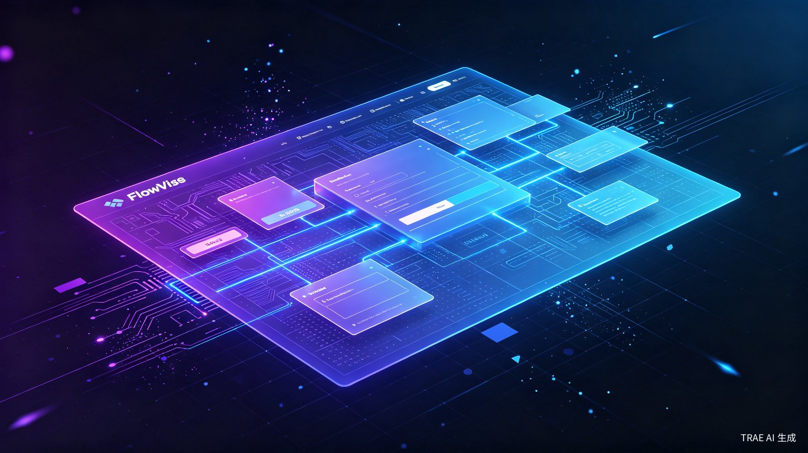
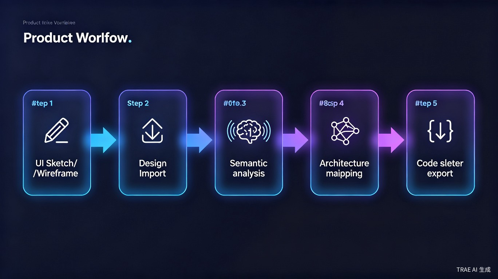

可视化工作流编辑器 + UI 设计画布 + AI 助手
把图形化结构输出为 AI IDE 可消费的标准化 JSON

FlowVue 是一款本地优先的可视化工作流编辑器，同时提供 UI 设计（Sketch）画布。用户在画布上编排节点、绘制 UI 图元，最终导出标准化 JSON / SceneSpec / 分层 ZIP，供 AI IDE 通过 MCP 协议消费。
基于节点与连线的画布编辑器，支持拖拽、连接、撤销/重做、多选、缩放与分层下钻。当前节点注册表覆盖 291 种类型，可用于流程自动化、集成编排与 AI 辅助编排。
提供 Sketch 风格图元与 sketch-controls，支持 Figma 导入、HTML+CSS 语义解析。将设计稿转换为结构化的 SceneSpec，用于后续工作流节点与 AI 消费。
工作流使用 schemaVersion 1.3.0 的 JSON 协议，支持版本迁移。可导出 .flowvue 组合项目、分层 ZIP 与 MCP handoff 载荷，供 Cursor / Trae 等 AI IDE 镜像还原。
内置 AI 聊天助手，提供 stage-gate 输出、FlowCanvasPatch 与自然语言生成。校验引擎覆盖 Schema、语义、契约、路由与架构闭环，运行时可执行节点流程。
FlowVue 面向需要将流程、UI 与 AI 生成链路打通的开发者，解决"图形化结构难以被 AI IDE 稳定消费"的实际问题。
需要把设计稿或流程转化为结构化输入
独立编排 API、数据库与界面流程
一人完成流程建模、UI 草图与 AI 生成
需要沉淀可复用的流程与组件规范
API 调用、状态判断、错误处理等逻辑写在文档或代码里，非技术角色难以理解，团队协作时频繁返工。
Figma、Sketch 或截图中的 UI 信息需要手工整理成 prompt 或 JSON，AI IDE 才能理解，过程重复且容易丢失层级关系。
直接向大模型描述需求，输出质量依赖 prompt 技巧。缺少统一的中间协议，导致生成代码与项目约束不一致。
现有工具多停留在"一次性导出"，设计或流程调整后难以回传 IDE，也无法追踪变更带来的代码漂移。
用节点画布快速搭建集成流程，连接 API、数据库、判断与输出节点，导出标准化 JSON 供运行时或 AI IDE 使用。
导入 Figma 或 HTML 页面，解析为 SceneSpec，在画布上调整图元与语义，再作为 AI 生成的前置输入。
在导出前运行 Schema、语义、契约与路由校验，提前发现节点连接错误、缺失参数，减少生成后的返工。
通过 MCP 将 .flowvue 项目或分层 ZIP 同步到 IDE，后续设计或流程变更可生成差异报告，辅助定位需要更新的代码。
FlowVue 不承诺直接生成生产代码，而是在"人的意图"与"AI 生成"之间建立稳定、可校验的中间层。
减少在 prompt 工程与手工整理设计稿上花费的时间，把可图形化表达的结构直接交给工具处理。
用结构化 JSON 沉淀流程与 UI 约定，让 AI IDE 的输出更贴近项目实际约束。
在开发者、设计与 AI 工具之间建立共同理解的中间媒介。
FlowVue 不把"生成生产代码"作为终点，而是输出标准化、可校验的结构化数据，让 AI IDE 在此基础上继续生成。
支持 Figma REST、HTML+CSS、Sketch 等格式进入 UI 画布
➔转换为 SceneSpec，识别图元层级与基础语义
➔在节点画布上连接 API、判断、状态与 UI 节点，形成可运行流程
➔Schema、语义、契约、路由与架构闭环校验，拦截导出前错误
➔输出 .flowvue / JSON / 分层 ZIP，通过 MCP 同步到 AI IDE

FlowVue 不是设计工具，也不是代码生成器，而是位于两者之间的"结构化中间层"，强项在于工作流与 UI 的联动导出。
| 工具 | 核心定位 | 工作流编排 | UI 设计画布 | 语义映射 | 标准化导出 | IDE MCP 同步 |
|---|---|---|---|---|---|---|
| FlowVue | 工作流 + UI 中间层 | 核心能力 | 支持 | 支持 | JSON / ZIP | MCP v0.4 |
| Figma | UI 设计协作 | 不支持 | 核心能力 | 不支持 | 设计源文件 | 不支持 |
| n8n / Node-RED | 自动化工作流 | 核心能力 | 不支持 | 不支持 | 运行态 JSON | 不支持 |
| Storybook | 组件文档与测试 | 不支持 | 不支持 | 不支持 | 组件模板 | 不支持 |
| v0 by Vercel | AI 代码生成 | 不支持 | 生成预览 | 不支持 | React 代码 | 不支持 |
| Draw.io / Excalidraw | 通用白板绘图 | 手动绘制 | 手动绘制 | 不支持 | 不支持 | 不支持 |
| MasterGo / 即时设计 | 国产 UI 设计 | 不支持 | 核心能力 | 不支持 | CSS 代码 | 不支持 |
FlowVue 的当前实现围绕"工作流编排、UI 语义映射、标准化导出"三条主线展开，每一条都对应真实的代码模块。
节点画布支持拖拽、连线、撤销/重做、多选、缩放与分层下钻。当前节点注册表包含 291 种类型，覆盖 API、数据库、判断、循环、UI 事件等主干场景。流程可以保存为 schemaVersion 1.3.0 的 JSON，支持版本迁移与历史回溯，100 节点级画布可流畅编辑。
双工作区中的 UI 设计区提供 Sketch 风格图元与 sketch-controls，支持从 Figma、HTML+CSS、HTTP 语义源导入并解析为 SceneSpec。语义映射把设计稿中的层级、布局与基础控件类型转成结构化数据，为工作流节点和 AI 生成提供统一输入。
FlowVue 不直接生成生产代码，而是输出 .flowvue 组合项目、分层 ZIP 与 JSON 载荷。通过 MCP v0.4.1 协议，这些数据可被 Cursor、Trae 等 AI IDE 镜像还原；设计或流程变更后，drift 报告辅助定位需要同步的代码区域，实现有边界的双向 handoff。